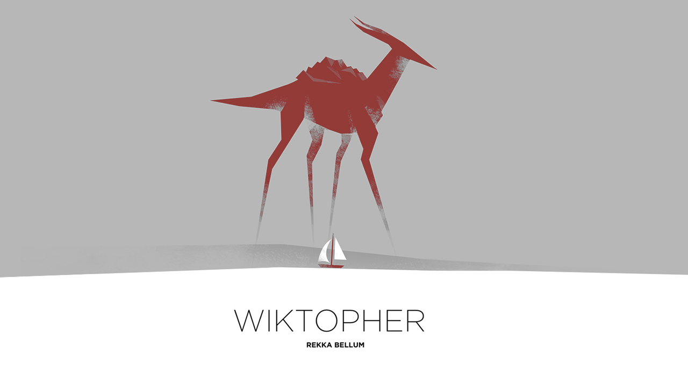

wiktopher
a novel
Wiktopher is a written novel. The story follows two travelers, as they discover the villages, flora and fauna of the Soronan Desert.
production
Rekka began writing this story while in Tahihi, French Polynesia. Because of laptop problems, drawing using heavy software like Photoshop was near impossible, and so we were forced to consider other hobbies. Rekka got back into writing, and created Wiktopher, inspired from our own travels and discoveries. Left was created during this time, to make the writing of this story possible.
Wiktopher is gender neutral as an experiment in creativity, but also to discourage readers from judging characters based on their genders.
It is still in production. We hope to publish a physical copy (which would include a fauna/flora encyclopedia), and to release it as an audio book too.
read the story
The story is available to read online, and is updated on a monthly basis.